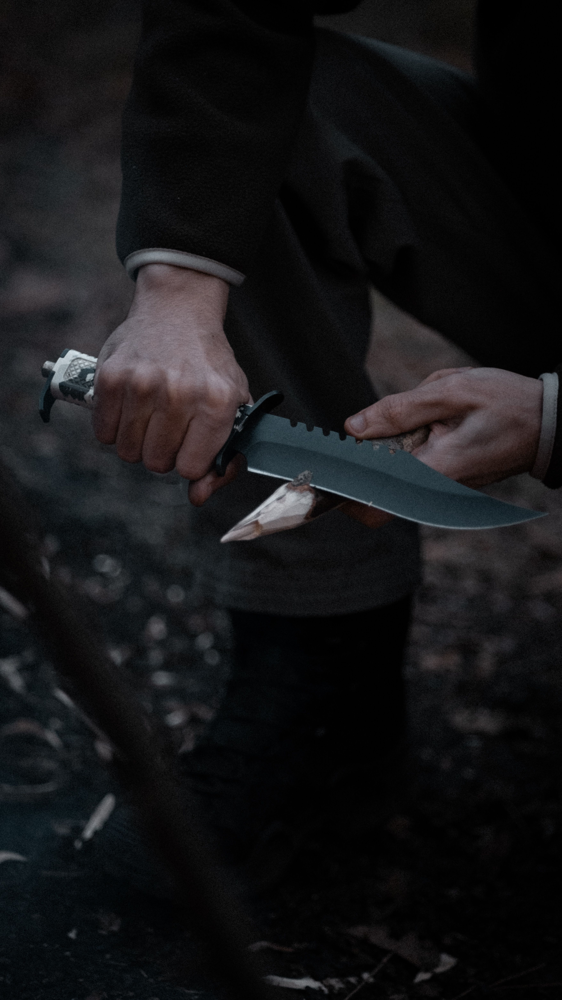
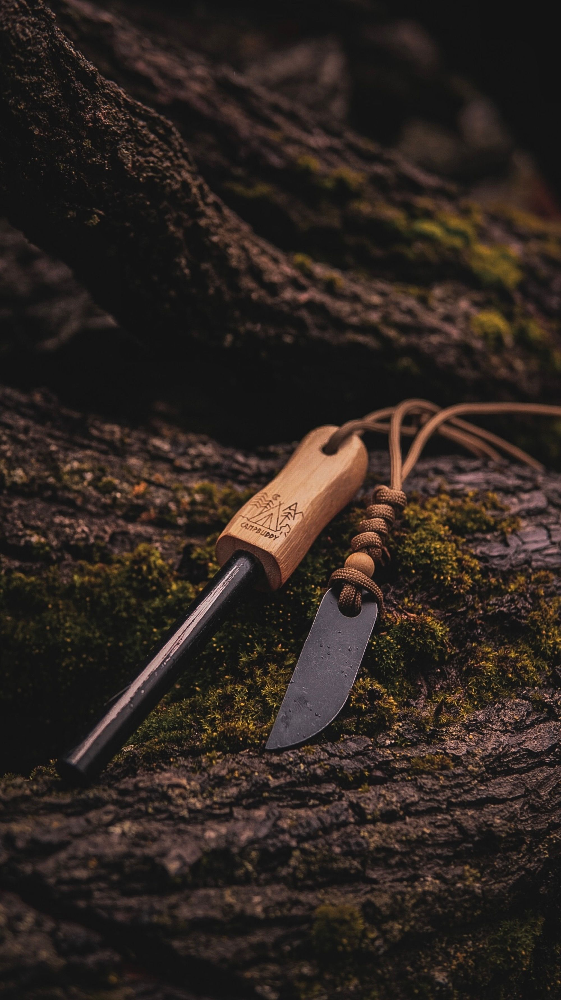
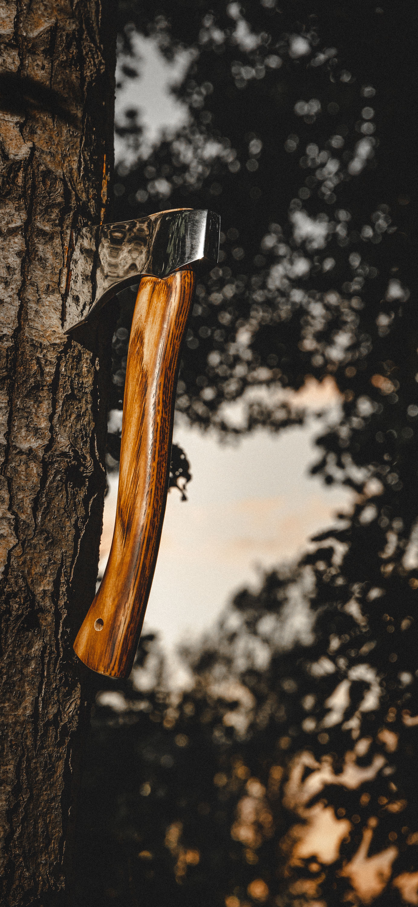
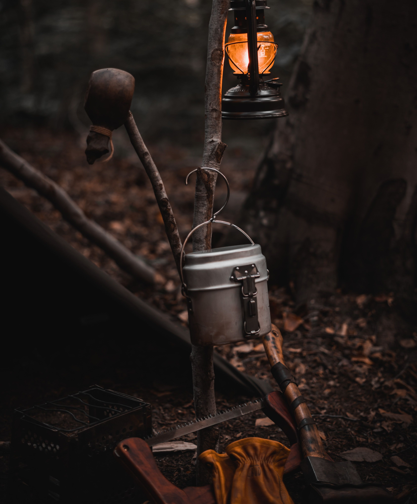
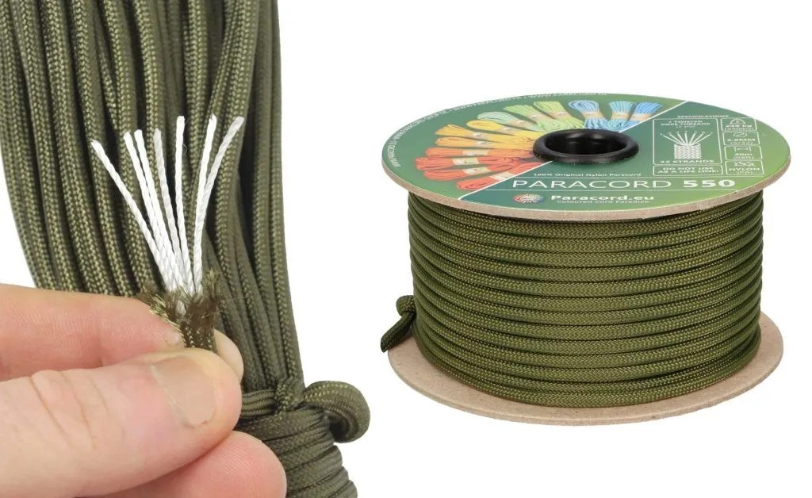
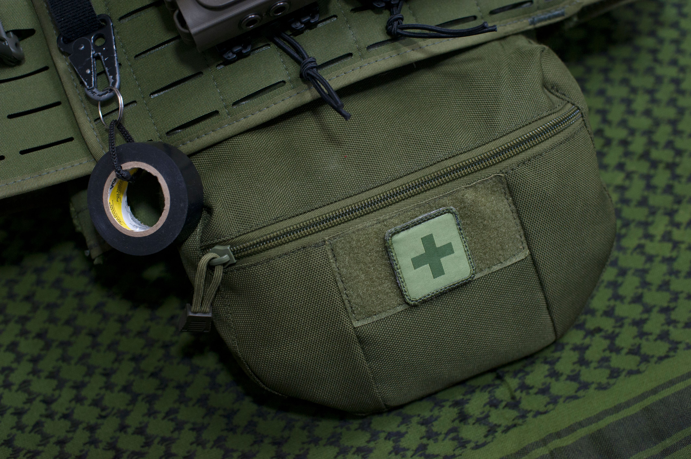
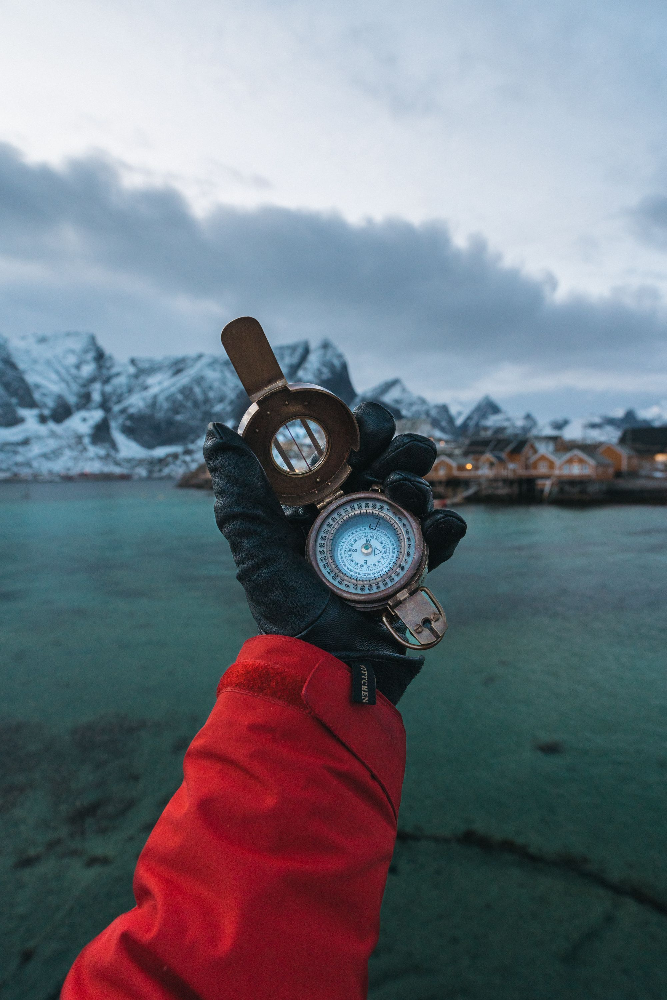
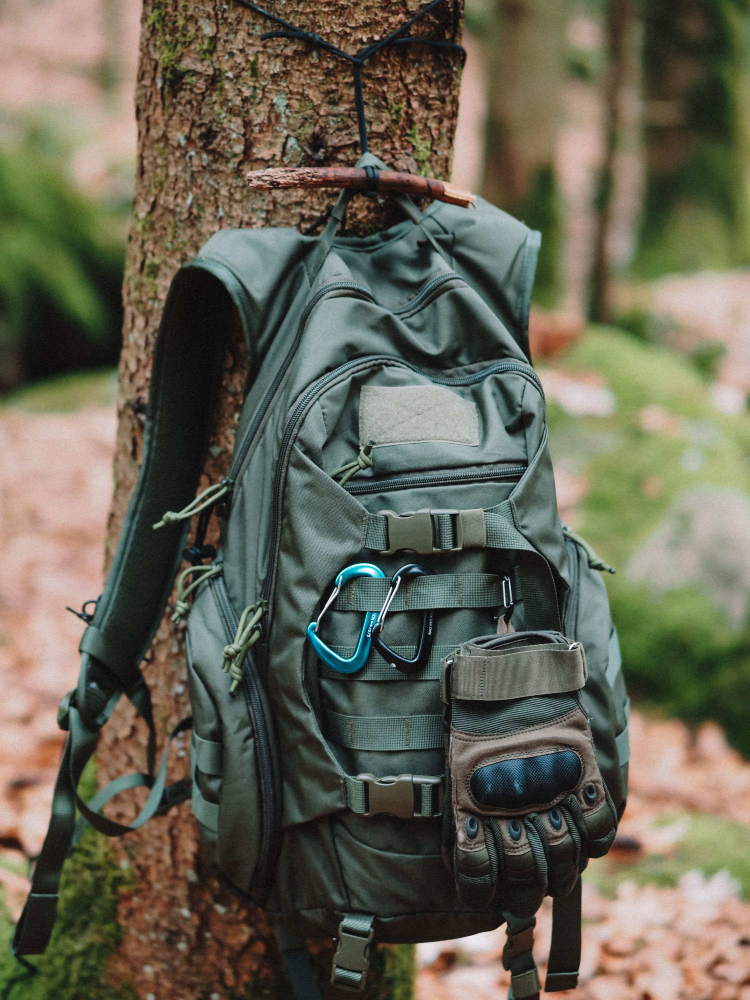

Cuchillo Bushcraft
Herramienta esencial para tareas de campamento, preparación de madera y supervivencia.
Si te encanta la naturaleza y la supervivencia, estás en el lugar correcto.
Conocé algunos de los productos más utilizados por amantes del bushcraft, el camping y la vida al aire libre.

Herramienta esencial para tareas de campamento, preparación de madera y supervivencia.

Permite encender fuego mediante chispas incluso en condiciones climáticas adversas.

Herramienta robusta diseñada para cortar leña, preparar refugios y realizar tareas esenciales durante actividades al aire libre.

Ideal para transportar agua de forma segura durante excursiones, caminatas y jornadas prolongadas en la naturaleza. Existen de diferentes aleaciones y permiten colocarse sobre el fuego.

Cuerda multifunción de gran resistencia utilizada para refugios, reparaciones de emergencia y numerosas aplicaciones de supervivencia.

Contiene elementos básicos para atender heridas leves y situaciones de emergencia durante actividades outdoor y campamentos.

Instrumento fundamental para la navegación terrestre que permite orientarse incluso en zonas sin cobertura tecnológica.

Diseñada para transportar equipamiento de manera organizada, cómoda y eficiente en travesías y aventuras al aire libre.